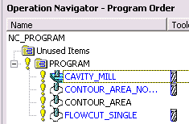

You want the Cavity Mill operation to be at the beginning of the program.
In the Operation Navigator, in Program Order View, select these operations:
CONTOUR_AREA_NON_STEEP
CONTOUR_AREA
FLOWCUT_SINGLE
|
Tip |
To select multiple operations, hold down the Ctrl key as you select the operations. |
Right-click the selected operations and choose Cut.
Right-click CAVITY_MILL and choose Paste.
The operations should appear in the order shown.
